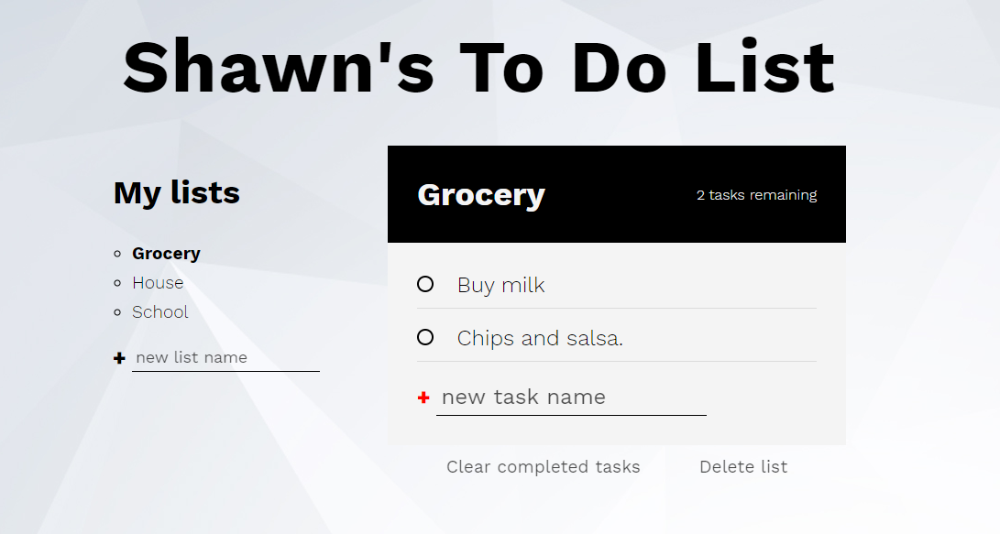

How it Works
This is my Todo web app. It work by first entering a todo task name in the textbox and selecting the category from the lists on the left. After choosing a category, or adding your own through the textbox at the bottom, you can press the “+” icon or hit "enter" key to add it to your list.
The todo tasks will be the same steps to add a task to a list. Once you start building you list of todos then you can click on the tasks to cross it off, symbolizing done. When the task is clicked, that todo will be crossed out and taken out of the tasks remaining next to the list's name, symboizing that it is done. When you want to delete a task or a list you can click the two buttons at the bottom of the list "Clear completed tasks" and "Delete List" to delete the crossed off tasks or the whole list it self.
Why the Design
I designed the Todo app the way I did for a couple reasons. The first has to do with the color and simplicity. I, personally, enjoy when an application is simple and not overdone. I find it easier on my eyes and that makes me able to spend more time using it. I picked the dark color to help pop out the important infomation needed and then the background image to add some feel that makes it feel like it wasen't to simple and just text on a webpage.
The second reason is time. Too many apps for projects like this students tend to take to much time on something have already been done. I understand that they might need to learn the skills and will through building a todo app However, they dont have to go 110% out on a simple todo app that won't help their portfolios. All you need to do is meet the requierments and goals set for the task given.
The Challenges
I faced a couple challenges while developing this app However, the biggest of these challenges was to implement muplitle ways of codeing into one. I spent more hours than I would like to admit watching other people todo app tutorials on youtube, and learned more from that then class. However, there is always the problem of knowing what code is the "better way" or known as "clean code" you start to go down this rabbit hole and trying to find out if your codeing the "right way". That is what I have had the most challenge with not the code or how to make projects work but how to navigate throw all the infomation on the internet now days.
What would I do differently?
The next time I do a Todo app, I would definitely look more about "local storage" and "databases". I know and have worked with it somewhat however, there is still a lot of diffrent ways to work with storage. This is also going to be a huge part of your job as you will always use CRUD (Create, Edit, Update, Delete) for data and storage or database.